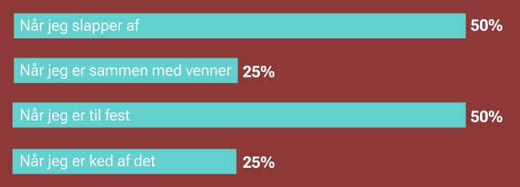
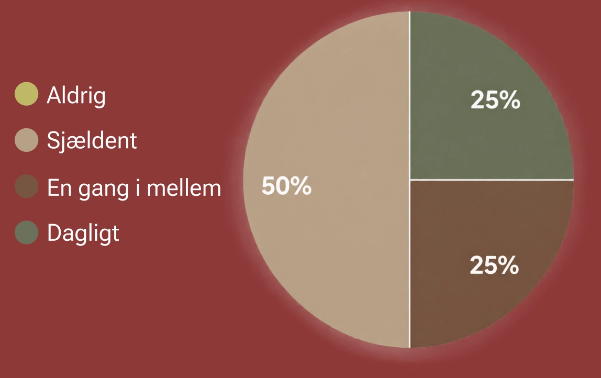
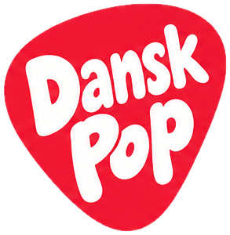

HVAD SYNES DANSKERNE?
HVAD SYNES DANSKERNE EGENTLIG NÅR MAN SPØRGER DEM IND TIL DEN PULSERENDE MUSIKGENRE, POP?
Hvornår lytter danskerne typisk til dansk pop-musik:

Hvor ofte lytter danskerne til dansk pop-musik:


HVAD SYNES DANSKERNE EGENTLIG NÅR MAN SPØRGER DEM IND TIL DEN PULSERENDE MUSIKGENRE, POP?

